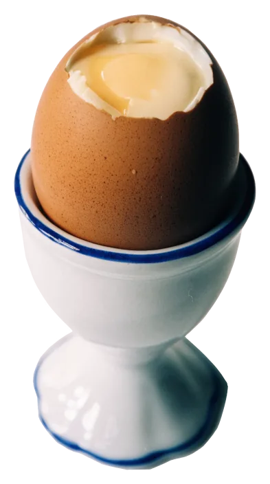
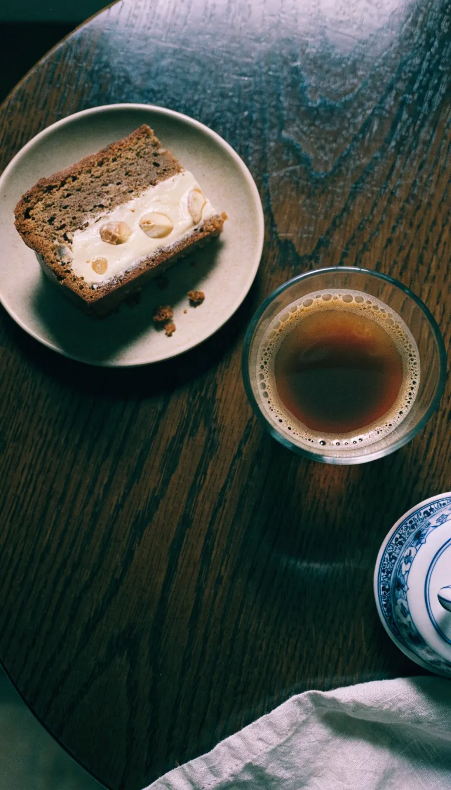
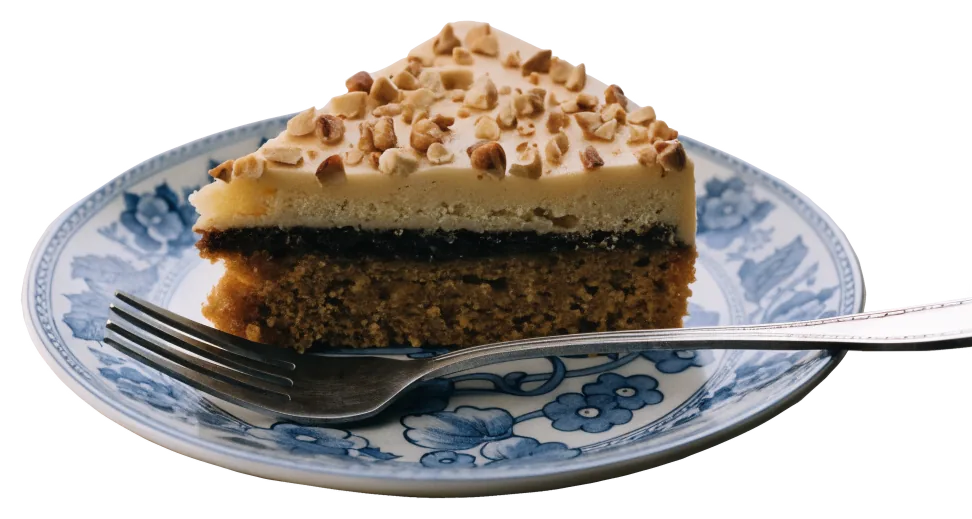
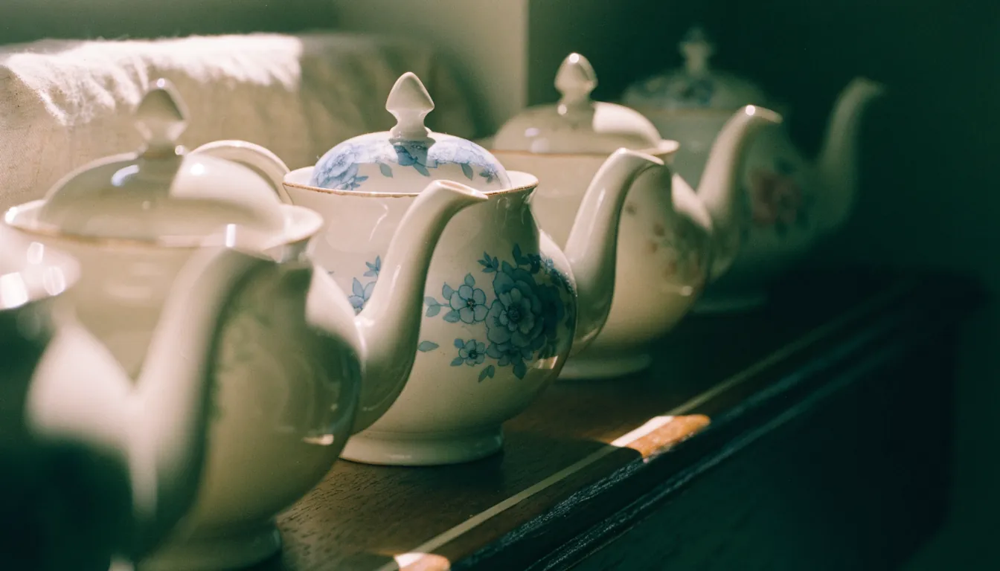
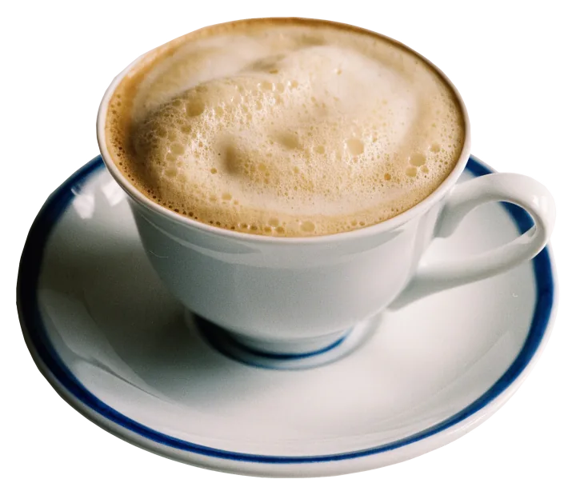

Café im Goebenhaus
Frühstück am Hafen,
Kuchen im Fachwerk.
Frühstück, Mittagstisch, Kaffee und Kuchen, Dienstag bis Sonntag 9–18 Uhr, mitten in der Stader Altstadt am Wasser West 21.
4,5831 Bewertungen auf GoogleBackstein, Eichenholz und ein rotes Sofa.
Im Gastraum liegt die Backsteinwand offen, darüber dunkle Eichenbalken, dazwischen gedrechselte Holzmöbel und das pflaumenrote Samtsofa. Im Regal stehen alte Teekannen, an den Wänden hängen gerahmte Tierzeichnungen. Bei gutem Wetter sitzen Sie draußen im Vorgarten hinter dem Tor.
- Frühstück
- ab 9 Uhr
- Mittagstisch
- mittags, auch vegetarisch
- Kaffee & Kuchen
- bis 18 Uhr
- Draußen sitzen
- Vorgarten am Tor
- Zum Mitnehmen
- möglich
- Reservieren
- am Wochenende empfohlen


Ein Tag im Goebenhaus
Von neun Uhr bis sechs: erst der Brötchenkorb, mittags der Mittagstisch, am Nachmittag Kaffee und Kuchen.
Foto: Karin de Boer · Google Maps09:00
Frühstück
Brötchenkorb, Frühstücksei oder Rührei, dazu ein Käse- oder Schinkenteller mit Obst. Ab neun Uhr sind die Tische gedeckt.
 Foto: Andrea Osterkamp · Google Maps
Foto: Andrea Osterkamp · Google Maps11:00
Mit einem Glas Sekt
Wer länger bleibt, nimmt ein Glas Sekt zur Frühstücksplatte. Mittags kommt der Mittagstisch dazu, auch vegetarisch.

15:00
Kaffee und Kuchen
Kuchen mit Calvados, Nüssen und Marzipan und was sonst in der Theke steht. Bis 18 Uhr, dann schließt das Tor.
Die Karte, kurz gefasst.
Die vollständige Karte mit Preisen liegt im Café aus. Welche Kuchen heute in der Theke stehen, erfahren Sie vor Ort oder telefonisch unter 04141 2313.
- Frühstücke nach Wahlab 9 Uhr
- Frühstücksei
- Rührei
- Brötchenkorb
- Käseteller mit Obst
- Schinkenteller mit Obst
- Mittagstisch, wechselndmittags
- Vegetarische Gerichtenach Angebot
- Kuchen mit Calvados, Nüssen und Marzipan
- Kuchen und Torten aus der Theketäglich wechselnd
- Auch zum Mitnehmen

- Kaffee, Milchkaffee, Latte Macchiato
- Kaffee und Kuchenbis 18 Uhr

- Sektgern zum Frühstück
- Bier
- Wein
Gerichte und Preise ändern sich; die vollständige Karte liegt vor Ort aus.
Rund ums Haus
Fachwerk am Wasser West, Segelschiffe im Hansehafen, und drinnen das rote Sofa vor der Backsteinwand.


Neun bis sechs, montags ruht das Haus.
Am Wochenende sind die Tische früh vergeben, ein kurzer Anruf hilft.
Durchs Tor, dann rechts.
Wasser West 2121682 Stade
- Am Wasser West in der Altstadt, wenige Schritte vom Hansehafen.
- Durch das Backsteintor mit dem ovalen Schild.
- Durch den kleinen Vorgarten zur blauen Tür.
Google-Bewertungen
Das sagen Gäste auf Google
Eine Auswahl der Bewertungen, die Google-Nutzer hinterlassen haben, angezeigt über Google Maps. Ob die Verfasser hier gegessen haben, prüfen wir nicht.
Ihr Tisch unterm Giebel.
Tag, Uhrzeit, Personen: Wir prüfen Ihre Anfrage und melden uns telefonisch. Ab acht Personen bitte direkt anrufen.
4,5831 Bewertungen auf Google
Foto: Angelika · Google MapsEin Tisch im Fachwerk, ab neun.
Dienstag bis Sonntag am Wasser West, montags ruht das Haus.